| average normalized score | |
|---|---|
| fuzzer | |
| aflplusplus_440c | 92.77 |
| aflplusplus_c11 | 81.37 |
| aflplusplus_mopt | 76.13 |
| aflplusplus_500c | 75.94 |
| average rank | |
|---|---|
| fuzzer | |
| aflplusplus_mopt | 1.89 |
| aflplusplus_c11 | 2.26 |
| aflplusplus_440c | 2.42 |
| aflplusplus_500c | 2.42 |
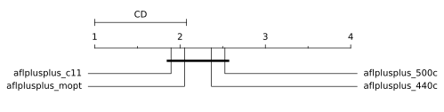
Note: The relative coverage summary table shows the median
relative performance of each fuzzer to the experiment maximum. Thus the
highest relative performance may not be 100%.
trial_relative_coverage = trial_coverage / experiment_max_coverage
| aflplusplus_440c | aflplusplus_mopt | aflplusplus_c11 | aflplusplus_500c | |
|---|---|---|---|---|
| FuzzerMedian | 97.00 | 98.00 | 97.00 | 97.00 |
| FuzzerMean | 94.06 | 93.20 | 92.81 | 92.60 |
| bloaty_fuzz_target | 90.00 | 96.00 | 95.00 | 94.00 |
| curl_curl_fuzzer_http | 98.00 | 99.00 | 98.00 | 99.00 |
| freetype2_ftfuzzer | 100.00 | nan | nan | nan |
| harfbuzz_hb-shape-fuzzer | 94.00 | nan | nan | nan |
| jsoncpp_jsoncpp_fuzzer | 99.00 | 100.00 | 100.00 | 100.00 |
| lcms_cms_transform_fuzzer | 74.00 | 47.00 | 63.00 | 57.00 |
| libjpeg-turbo_libjpeg_turbo_fuzzer | 99.00 | 97.00 | 98.00 | 99.00 |
| libpcap_fuzz_both | 96.00 | 89.00 | 88.00 | 89.00 |
| libxml2_xml | 84.00 | 85.00 | 89.00 | 84.00 |
| mbedtls_fuzz_dtlsclient | 94.00 | 98.00 | 95.00 | 97.00 |
| openssl_x509 | 99.00 | 99.00 | 99.00 | 99.00 |
| openthread_ot-ip6-send-fuzzer | 95.00 | 97.00 | 98.00 | 95.00 |
| proj4_proj_crs_to_crs_fuzzer | nan | nan | 94.00 | nan |
| re2_fuzzer | 98.00 | 98.00 | 98.00 | 97.00 |
| sqlite3_ossfuzz | 83.00 | 99.00 | 77.00 | 88.00 |
| systemd_fuzz-link-parser | 98.00 | nan | nan | nan |
| vorbis_decode_fuzzer | 99.00 | 99.00 | 99.00 | 99.00 |
| woff2_convert_woff2ttf_fuzzer | 98.00 | 98.00 | 97.00 | 95.00 |
| zlib_zlib_uncompress_fuzzer | 95.00 | 97.00 | 97.00 | 97.00 |
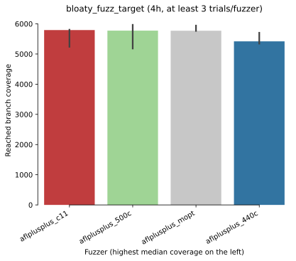
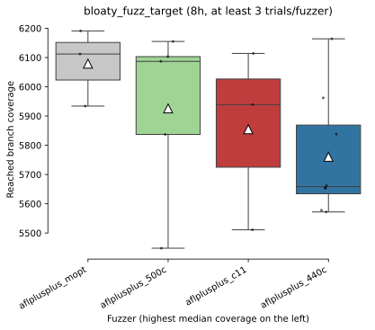
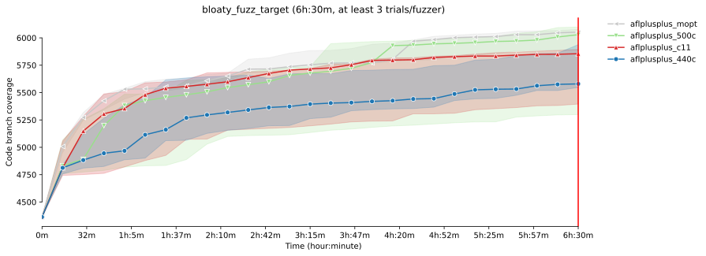
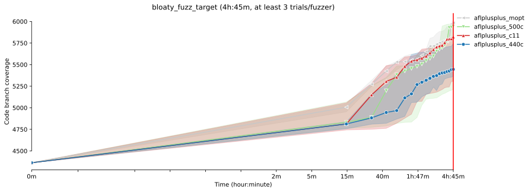
| count | mean | std | min | 25% | median | 75% | max | ||
|---|---|---|---|---|---|---|---|---|---|
| fuzzer | time | ||||||||
| aflplusplus_mopt | 8100 | 3.0 | 5645.666667 | 34.312291 | 5609.0 | 5630.0 | 5651.0 | 5664.0 | 5677.0 |
| aflplusplus_c11 | 8100 | 3.0 | 5480.333333 | 283.297253 | 5157.0 | 5378.0 | 5599.0 | 5642.0 | 5685.0 |
| aflplusplus_500c | 8100 | 5.0 | 5478.600000 | 221.739261 | 5099.0 | 5481.0 | 5546.0 | 5629.0 | 5638.0 |
| aflplusplus_440c | 8100 | 8.0 | 5402.375000 | 267.043034 | 5098.0 | 5227.0 | 5318.5 | 5586.5 | 5862.0 |
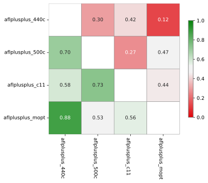
The table summarizes the A12 values from the pairwise Vargha-Delaney A measure of effect size. Green cells indicate the probability the fuzzer in the row will outperform the fuzzer in the column.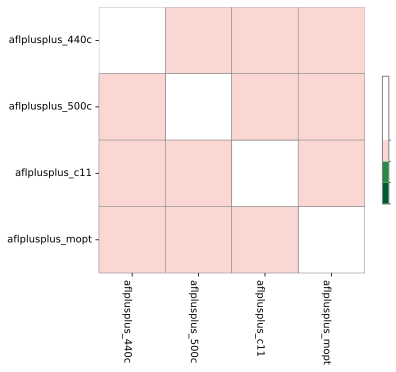
The table summarizes the p values of pairwise Mann-Whitney U tests. Green cells indicate that the reached coverage distribution of a given fuzzer pair is significantly different.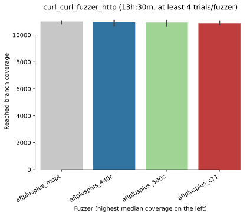
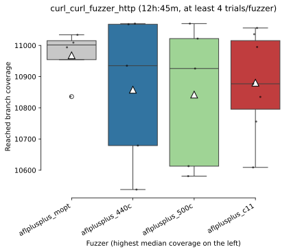
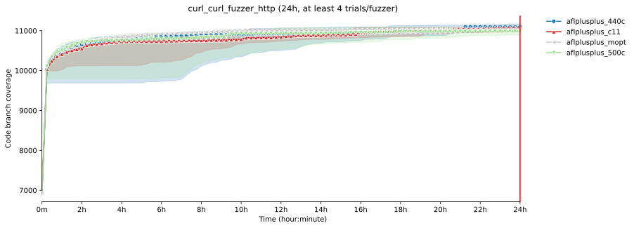
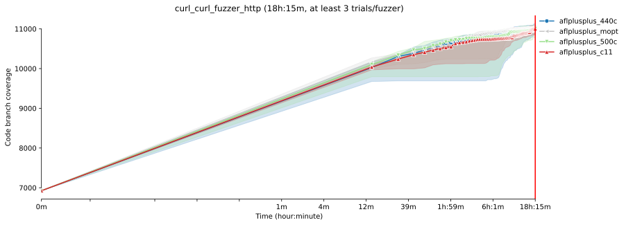
| count | mean | std | min | 25% | median | 75% | max | ||
|---|---|---|---|---|---|---|---|---|---|
| fuzzer | time | ||||||||
| aflplusplus_500c | 8100 | 5.0 | 10407.000000 | 510.802800 | 9794.0 | 9907.00 | 10721.0 | 10799.0 | 10814.0 |
| aflplusplus_mopt | 8100 | 4.0 | 10606.750000 | 247.497306 | 10240.0 | 10566.25 | 10713.0 | 10753.5 | 10761.0 |
| aflplusplus_440c | 8100 | 5.0 | 10318.200000 | 561.305354 | 9691.0 | 9719.00 | 10662.0 | 10751.0 | 10768.0 |
| aflplusplus_c11 | 8100 | 7.0 | 10401.428571 | 346.407687 | 9824.0 | 10170.50 | 10633.0 | 10645.5 | 10721.0 |
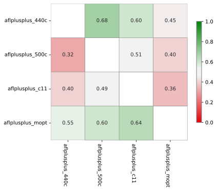
The table summarizes the A12 values from the pairwise Vargha-Delaney A measure of effect size. Green cells indicate the probability the fuzzer in the row will outperform the fuzzer in the column.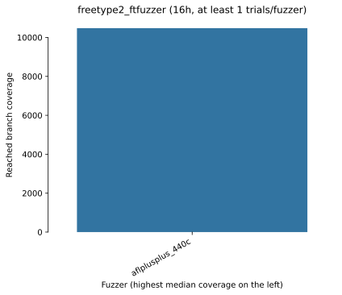
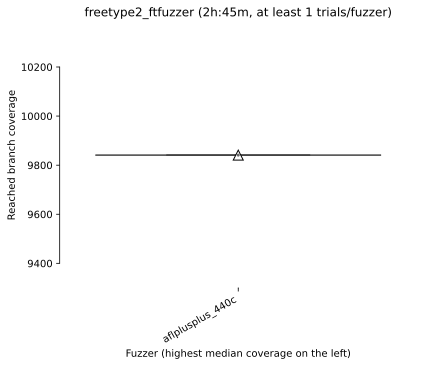
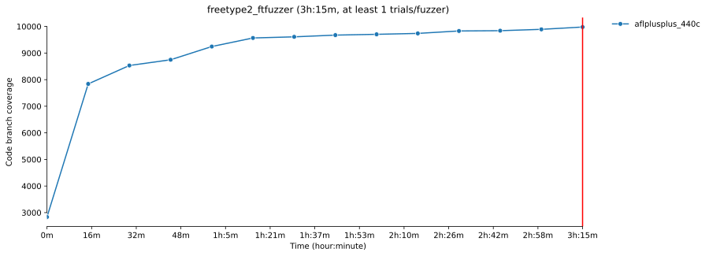
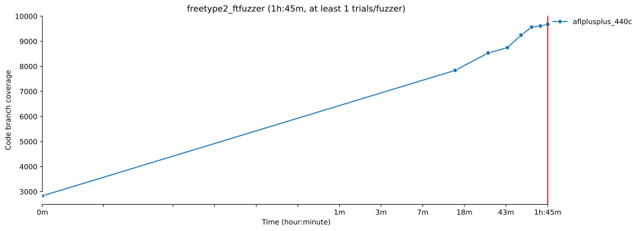
| count | mean | std | min | 25% | median | 75% | max | ||
|---|---|---|---|---|---|---|---|---|---|
| fuzzer | time | ||||||||
| aflplusplus_440c | 8100 | 1.0 | 9739.0 | NaN | 9739.0 | 9739.0 | 9739.0 | 9739.0 | 9739.0 |
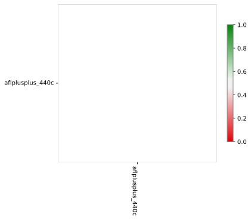
The table summarizes the A12 values from the pairwise Vargha-Delaney A measure of effect size. Green cells indicate the probability the fuzzer in the row will outperform the fuzzer in the column.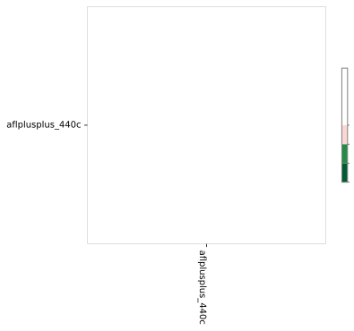
The table summarizes the p values of pairwise Mann-Whitney U tests. Green cells indicate that the reached coverage distribution of a given fuzzer pair is significantly different.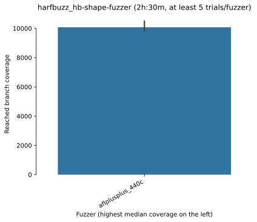
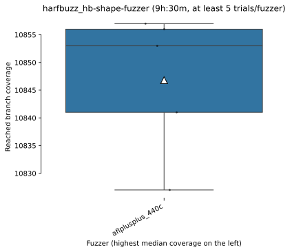
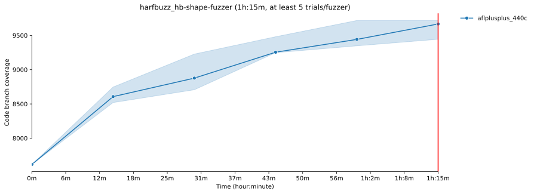
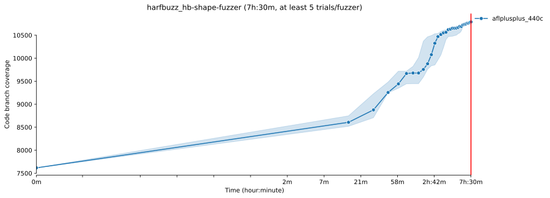
| count | mean | std | min | 25% | median | 75% | max | ||
|---|---|---|---|---|---|---|---|---|---|
| fuzzer | time | ||||||||
| aflplusplus_440c | 8100 | 5.0 | 10005.6 | 286.524519 | 9760.0 | 9827.0 | 9879.0 | 10096.0 | 10466.0 |
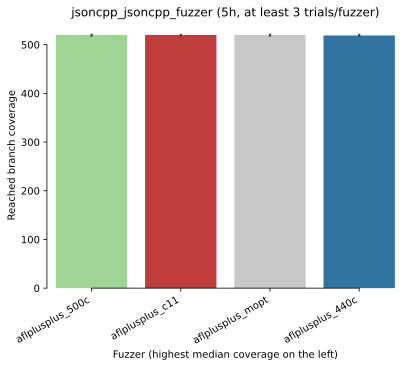
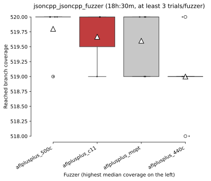
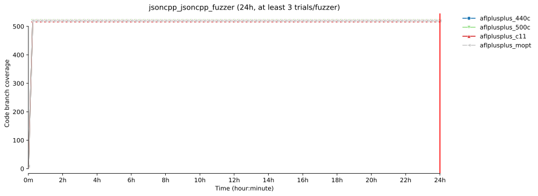
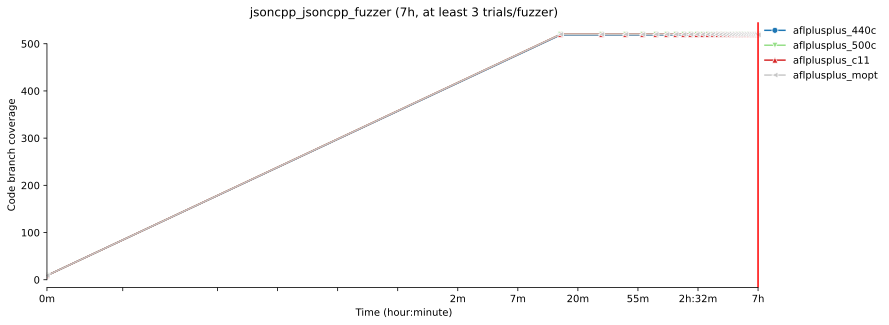
| count | mean | std | min | 25% | median | 75% | max | ||
|---|---|---|---|---|---|---|---|---|---|
| fuzzer | time | ||||||||
| aflplusplus_500c | 8100 | 5.0 | 519.800000 | 0.447214 | 519.0 | 520.0 | 520.0 | 520.0 | 520.0 |
| aflplusplus_c11 | 8100 | 3.0 | 519.666667 | 0.577350 | 519.0 | 519.5 | 520.0 | 520.0 | 520.0 |
| aflplusplus_mopt | 8100 | 5.0 | 519.600000 | 0.547723 | 519.0 | 519.0 | 520.0 | 520.0 | 520.0 |
| aflplusplus_440c | 8100 | 5.0 | 519.000000 | 0.707107 | 518.0 | 519.0 | 519.0 | 519.0 | 520.0 |
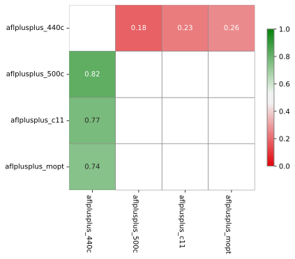
The table summarizes the A12 values from the pairwise Vargha-Delaney A measure of effect size. Green cells indicate the probability the fuzzer in the row will outperform the fuzzer in the column.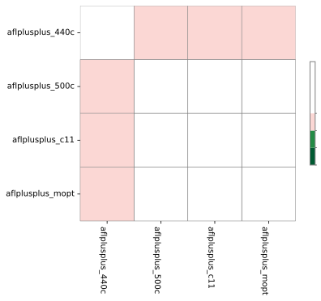
The table summarizes the p values of pairwise Mann-Whitney U tests. Green cells indicate that the reached coverage distribution of a given fuzzer pair is significantly different.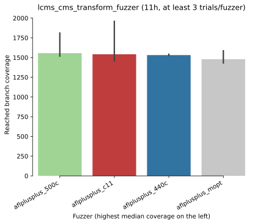
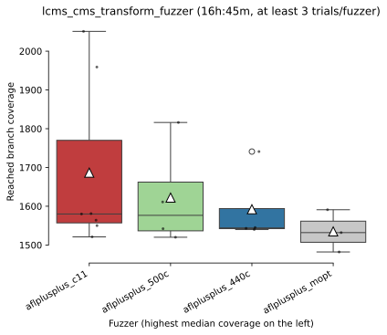
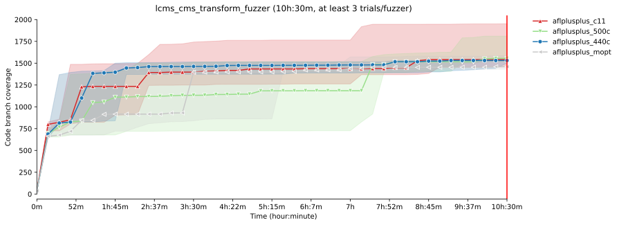
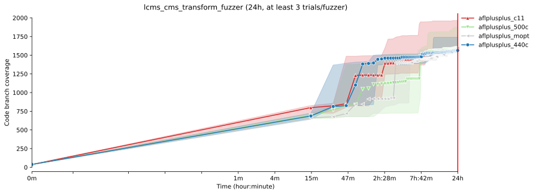
| count | mean | std | min | 25% | median | 75% | max | ||
|---|---|---|---|---|---|---|---|---|---|
| fuzzer | time | ||||||||
| aflplusplus_440c | 8100 | 4.0 | 1444.000000 | 70.109438 | 1371.0 | 1390.50 | 1449.5 | 1503.0 | 1506.0 |
| aflplusplus_c11 | 8100 | 7.0 | 1248.142857 | 399.071184 | 824.0 | 923.50 | 1234.0 | 1445.0 | 1942.0 |
| aflplusplus_500c | 8100 | 4.0 | 1113.750000 | 402.099801 | 719.0 | 793.25 | 1118.0 | 1438.5 | 1500.0 |
| aflplusplus_mopt | 8100 | 3.0 | 1022.666667 | 323.470761 | 766.0 | 841.00 | 916.0 | 1151.0 | 1386.0 |
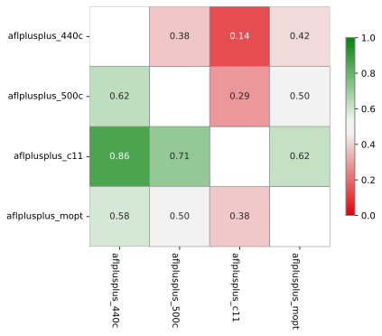
The table summarizes the A12 values from the pairwise Vargha-Delaney A measure of effect size. Green cells indicate the probability the fuzzer in the row will outperform the fuzzer in the column.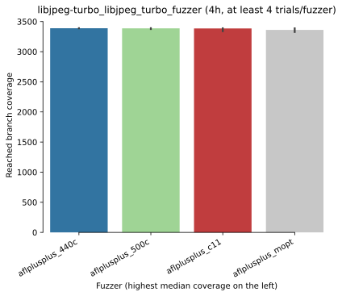
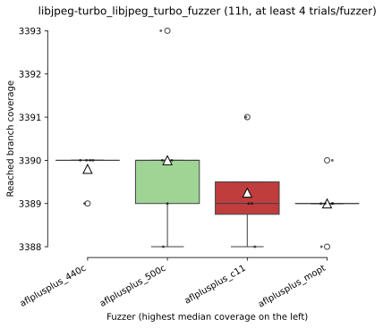
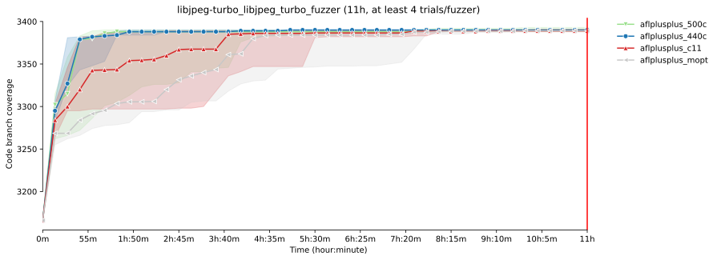
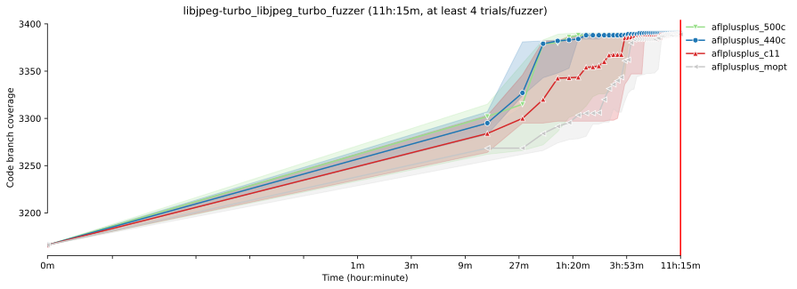
| count | mean | std | min | 25% | median | 75% | max | ||
|---|---|---|---|---|---|---|---|---|---|
| fuzzer | time | ||||||||
| aflplusplus_440c | 8100 | 5.0 | 3387.800000 | 2.280351 | 3384.0 | 3388.0 | 3388.0 | 3389.0 | 3390.0 |
| aflplusplus_500c | 8100 | 5.0 | 3374.000000 | 27.340446 | 3326.0 | 3377.0 | 3388.0 | 3389.0 | 3390.0 |
| aflplusplus_c11 | 8100 | 4.0 | 3349.000000 | 46.267339 | 3297.0 | 3316.5 | 3355.5 | 3388.0 | 3388.0 |
| aflplusplus_mopt | 8100 | 6.0 | 3329.166667 | 45.652674 | 3291.0 | 3298.0 | 3306.0 | 3368.0 | 3388.0 |
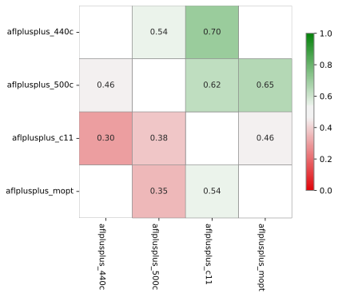
The table summarizes the A12 values from the pairwise Vargha-Delaney A measure of effect size. Green cells indicate the probability the fuzzer in the row will outperform the fuzzer in the column.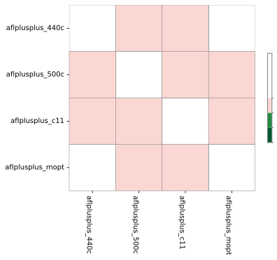
The table summarizes the p values of pairwise Mann-Whitney U tests. Green cells indicate that the reached coverage distribution of a given fuzzer pair is significantly different.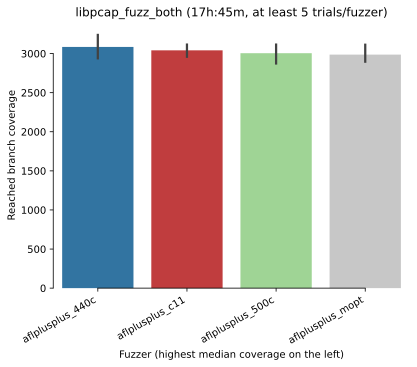
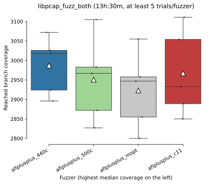
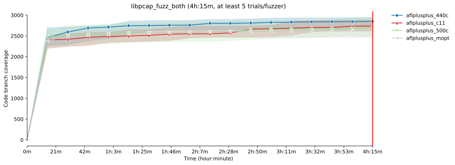
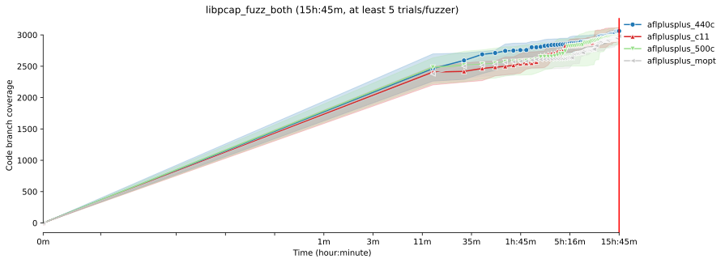
| count | mean | std | min | 25% | median | 75% | max | ||
|---|---|---|---|---|---|---|---|---|---|
| fuzzer | time | ||||||||
| aflplusplus_440c | 8100 | 5.0 | 2781.6 | 96.740891 | 2643.0 | 2734.0 | 2803.0 | 2833.0 | 2895.0 |
| aflplusplus_mopt | 8100 | 5.0 | 2632.0 | 130.086510 | 2459.0 | 2581.0 | 2598.0 | 2742.0 | 2780.0 |
| aflplusplus_500c | 8100 | 5.0 | 2633.0 | 200.982586 | 2366.0 | 2543.0 | 2590.0 | 2820.0 | 2846.0 |
| aflplusplus_c11 | 8100 | 5.0 | 2593.4 | 118.803619 | 2471.0 | 2505.0 | 2552.0 | 2711.0 | 2728.0 |
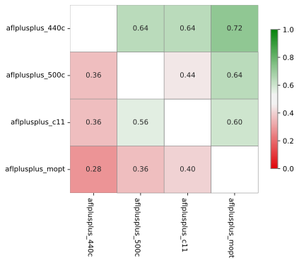
The table summarizes the A12 values from the pairwise Vargha-Delaney A measure of effect size. Green cells indicate the probability the fuzzer in the row will outperform the fuzzer in the column.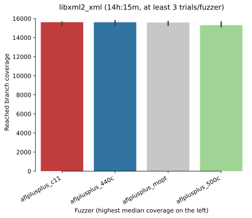
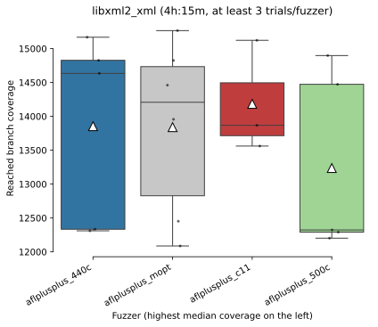
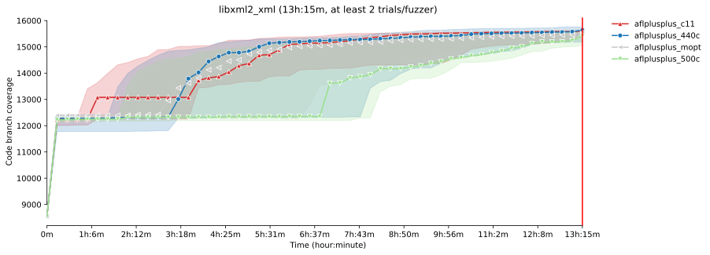
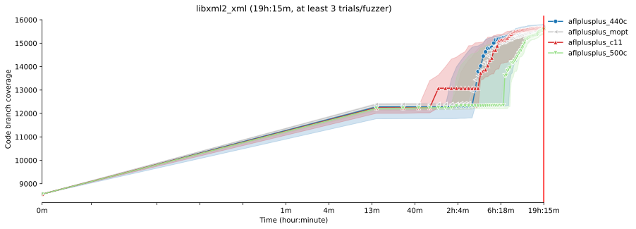
| count | mean | std | min | 25% | median | 75% | max | ||
|---|---|---|---|---|---|---|---|---|---|
| fuzzer | time | ||||||||
| aflplusplus_c11 | 8100 | 3.0 | 13289.666667 | 1164.024198 | 12246.0 | 12662.0 | 13078.0 | 13811.50 | 14545.0 |
| aflplusplus_mopt | 8100 | 6.0 | 12783.833333 | 769.280551 | 12076.0 | 12290.5 | 12424.0 | 13399.75 | 13808.0 |
| aflplusplus_500c | 8100 | 5.0 | 12816.600000 | 815.788759 | 12180.0 | 12291.0 | 12318.0 | 13227.00 | 14067.0 |
| aflplusplus_440c | 8100 | 5.0 | 12595.600000 | 959.667026 | 11792.0 | 12279.0 | 12313.0 | 12329.00 | 14265.0 |
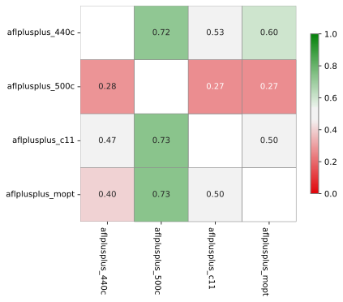
The table summarizes the A12 values from the pairwise Vargha-Delaney A measure of effect size. Green cells indicate the probability the fuzzer in the row will outperform the fuzzer in the column.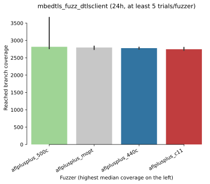
| count | mean | std | min | 25% | median | 75% | max | ||
|---|---|---|---|---|---|---|---|---|---|
| fuzzer | time | ||||||||
| aflplusplus_mopt | 8100 | 7.0 | 2664.000000 | 54.820921 | 2542.0 | 2673.00 | 2683.0 | 2688.00 | 2701.0 |
| aflplusplus_500c | 8100 | 5.0 | 2658.400000 | 52.733291 | 2579.0 | 2655.00 | 2665.0 | 2666.00 | 2727.0 |
| aflplusplus_c11 | 8100 | 6.0 | 2624.166667 | 58.571039 | 2565.0 | 2588.75 | 2607.0 | 2644.00 | 2727.0 |
| aflplusplus_440c | 8100 | 8.0 | 2596.250000 | 60.801198 | 2525.0 | 2550.50 | 2573.5 | 2651.25 | 2687.0 |
| count | mean | std | min | 25% | median | 75% | max | ||
|---|---|---|---|---|---|---|---|---|---|
| fuzzer | time | ||||||||
| aflplusplus_c11 | 8100 | 5.0 | 5829.0 | 6.204837 | 5821.0 | 5824.0 | 5831.0 | 5834.00 | 5835.0 |
| aflplusplus_mopt | 8100 | 2.0 | 5830.0 | 0.000000 | 5830.0 | 5830.0 | 5830.0 | 5830.00 | 5830.0 |
| aflplusplus_440c | 8100 | 2.0 | 5828.0 | 2.828427 | 5826.0 | 5827.0 | 5828.0 | 5829.00 | 5830.0 |
| aflplusplus_500c | 8100 | 6.0 | 5825.5 | 9.607289 | 5808.0 | 5823.5 | 5827.5 | 5832.25 | 5834.0 |
| count | mean | std | min | 25% | median | 75% | max | ||
|---|---|---|---|---|---|---|---|---|---|
| fuzzer | time | ||||||||
| aflplusplus_c11 | 8100 | 4.0 | 2888.00 | 37.815341 | 2832.0 | 2883.75 | 2902.5 | 2906.75 | 2915.0 |
| aflplusplus_mopt | 8100 | 6.0 | 2885.50 | 56.705379 | 2832.0 | 2835.00 | 2878.0 | 2929.25 | 2958.0 |
| aflplusplus_500c | 8100 | 5.0 | 2848.60 | 49.882863 | 2815.0 | 2828.00 | 2831.0 | 2832.00 | 2937.0 |
| aflplusplus_440c | 8100 | 4.0 | 2826.75 | 13.817260 | 2808.0 | 2820.75 | 2830.0 | 2836.00 | 2839.0 |
| count | mean | std | min | 25% | median | 75% | max | ||
|---|---|---|---|---|---|---|---|---|---|
| fuzzer | time | ||||||||
| aflplusplus_c11 | 8100 | 3.0 | 5479.666667 | 238.850023 | 5277.0 | 5348.0 | 5419.0 | 5581.0 | 5743.0 |
| count | mean | std | min | 25% | median | 75% | max | ||
|---|---|---|---|---|---|---|---|---|---|
| fuzzer | time | ||||||||
| aflplusplus_440c | 8100 | 5.0 | 2817.6 | 29.194178 | 2772.0 | 2812.00 | 2823.0 | 2830.00 | 2851.0 |
| aflplusplus_mopt | 8100 | 6.0 | 2803.5 | 30.852877 | 2772.0 | 2781.00 | 2796.0 | 2820.75 | 2852.0 |
| aflplusplus_c11 | 8100 | 6.0 | 2799.5 | 20.540204 | 2779.0 | 2782.75 | 2795.5 | 2812.75 | 2830.0 |
| aflplusplus_500c | 8100 | 2.0 | 2791.5 | 47.376154 | 2758.0 | 2774.75 | 2791.5 | 2808.25 | 2825.0 |
| count | mean | std | min | 25% | median | 75% | max | ||
|---|---|---|---|---|---|---|---|---|---|
| fuzzer | time | ||||||||
| aflplusplus_mopt | 8100 | 3.0 | 14401.000000 | 1569.243130 | 12589.0 | 13946.0 | 15303.0 | 15307.0 | 15311.0 |
| aflplusplus_500c | 8100 | 9.0 | 13048.111111 | 1754.511502 | 10602.0 | 11342.0 | 13481.0 | 14038.0 | 15194.0 |
| aflplusplus_440c | 8100 | 9.0 | 12711.111111 | 786.728582 | 11532.0 | 12056.0 | 12832.0 | 13263.0 | 13944.0 |
| aflplusplus_c11 | 8100 | 3.0 | 12510.333333 | 1881.660526 | 11024.0 | 11452.5 | 11881.0 | 13253.5 | 14626.0 |
| count | mean | std | min | 25% | median | 75% | max | ||
|---|---|---|---|---|---|---|---|---|---|
| fuzzer | time | ||||||||
| aflplusplus_440c | 8100 | 6.0 | 221.333333 | 3.444803 | 217.0 | 219.0 | 221.0 | 224.5 | 225.0 |
| count | mean | std | min | 25% | median | 75% | max | ||
|---|---|---|---|---|---|---|---|---|---|
| fuzzer | time | ||||||||
| aflplusplus_c11 | 8100 | 4.0 | 1258.000000 | 3.366502 | 1254.0 | 1256.25 | 1258.0 | 1259.75 | 1262.0 |
| aflplusplus_mopt | 8100 | 7.0 | 1255.857143 | 5.727960 | 1245.0 | 1254.00 | 1258.0 | 1259.00 | 1262.0 |
| aflplusplus_440c | 8100 | 4.0 | 1254.250000 | 10.012492 | 1241.0 | 1249.25 | 1257.0 | 1262.00 | 1262.0 |
| aflplusplus_500c | 8100 | 6.0 | 1253.166667 | 10.166940 | 1235.0 | 1250.25 | 1257.0 | 1258.50 | 1263.0 |
| count | mean | std | min | 25% | median | 75% | max | ||
|---|---|---|---|---|---|---|---|---|---|
| fuzzer | time | ||||||||
| aflplusplus_440c | 8100 | 4.0 | 1149.250000 | 20.221688 | 1128.0 | 1134.00 | 1150.5 | 1165.75 | 1168.0 |
| aflplusplus_mopt | 8100 | 7.0 | 1125.571429 | 37.237334 | 1056.0 | 1107.50 | 1148.0 | 1152.00 | 1156.0 |
| aflplusplus_c11 | 8100 | 6.0 | 1134.000000 | 31.413373 | 1087.0 | 1115.00 | 1138.0 | 1161.00 | 1165.0 |
| aflplusplus_500c | 8100 | 6.0 | 1120.166667 | 34.072961 | 1065.0 | 1109.75 | 1118.0 | 1145.00 | 1159.0 |
| count | mean | std | min | 25% | median | 75% | max | ||
|---|---|---|---|---|---|---|---|---|---|
| fuzzer | time | ||||||||
| aflplusplus_500c | 8100 | 7.0 | 459.428571 | 4.649629 | 455.0 | 456.50 | 459.0 | 460.00 | 469.0 |
| aflplusplus_mopt | 8100 | 7.0 | 459.285714 | 6.369571 | 451.0 | 455.00 | 459.0 | 462.50 | 470.0 |
| aflplusplus_c11 | 8100 | 6.0 | 458.833333 | 2.926887 | 456.0 | 456.25 | 458.5 | 460.75 | 463.0 |
| aflplusplus_440c | 8100 | 3.0 | 452.333333 | 5.859465 | 448.0 | 449.00 | 450.0 | 454.50 | 459.0 |
# Check out the right commit.
git checkout 75efa6661b9eb44b9774e383619a2845dd0fa608
# Download the internal config file.
curl https://storage.googleapis.com//home/ubuntu/experiment-data/2026-06-09-aflpp-regress-mopt/input/config/experiment.yaml > /tmp/experiment-config.yaml
make install-dependencies
# Launch the experiment using paramters from the internal config file.
PYTHONPATH=. python experiment/reproduce_experiment.py -c /tmp/experiment-config.yaml -e <new_experiment_name>